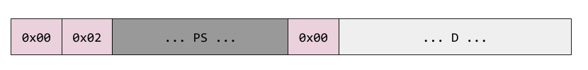

RSA has been a staple of public key cryptography for over 40 years, and is still being used today for some tasks in the newest TLS 1.3 standard. This post describes the theory behind RSA - the math that makes it work, as well as some practical considerations; it also presents a complete implementation of RSA key generation, encryption and decryption in Go.
The RSA algorithm
The beauty of the RSA algorithm is its simplicity. You don't need much more than some familiarity with elementary number theory to understand it, and the prerequisites can be grokked in a few hours.
In this presentation M is the message we want to encrypt, resulting in the ciphertext C. Both M and C are large integers. Refer to the Practical Considerations section for representing arbitrary data with such integers.
The RSA algorithm consists of three main phases: key generation, encryption and decryption.
Key generation
The first phase in using RSA is generating the public/private keys. This is accomplished in several steps.
Step 1: find two random, very large prime numbers p and q and calculate . How large should these primes be? The current recommendation is for n to be at least 2048 bits, or over 600 decimal digits. We'll assume that the message M - represented as a number - is smaller than n (see Practical Considerations for details on what to do if it's not).
Step 2: select a small odd integer e that is relatively prime to , which is Euler's totient function. is calculated directly from Euler's formula (its proof is on Wikipedia):
For where p and q are primes, we get
In practice, it's recommended to pick e as one of a set of known prime values, most notably 65537. Picking this known number does not diminish the security of RSA, and has some advantages such as efficiency [1].
Step 3: compute d as the multiplicative inverse of e modulo . Lemma 3 in this post guarantees that d exists and is unique (and also explains what a modular multiplicative inverse is).
At this point we have all we need for the public/private keys. The public key is the pair and the private key is the pair . In practice, when doing decryption we have access to n already (from the public key), so d is really the only unknown.
Encryption and decryption
Encryption and decryption are both accomplished with the same modular exponentiation formula, substituting different values for x and y:
For encryption, the input is M and the exponent is e:
For decryption, the input is the ciphertext C and the exponent is d:
Why does it work?
Given M, we encrypt it by raising to the power of e modulo n. Apparently, this process is reversible by raising the result to the power of d modulo n, getting M back. Why does this work?
Proof:
Recall that e and d are multiplicative inverses modulo . That is, . This means that for some integer k we have or .
Let's see what is modulo p. Substituting in the formula for ed we get:
Now we can use Fermat's little theorem, which states that if M is not divisible by p, we have . This theorem is a special case of Euler's theorem, the proof of which I wrote about here.
So we can substitute 1 for in the latest equation, and raising 1 to any power is still 1:
Note that Fermat's little theorem requires that M is not divisible by p. We can safely assume that, because if , then trivially and again .
We can similarly show that:
So we have for the prime factors of n. Using a corollary to the Chinese Remainder Theorem, they are then equivalent modulo n itself:
Since we've defined M to be smaller than n, we've shown that ∎
Why is it secure?
Without the private key in hand, attackers only have the result of , as well as n and e (as they're part of the public key). Could they infer M from these numbers?
There is no known general way of doing this without factoring n (see the original RSA paper, section IX), and factoring is known to be a difficult problem. Specifically, here we assume that M and e are sufficiently large that (otherwise decrypting would be trivial).
If factoring was easy, we could factor n into p and q, then compute and then finally find d from using the extended Euclidean algorithm.
Practical considerations
The algorithm described so far is sometimes called textbook RSA (or schoolbook RSA). That's because it deals entirely in numbers, ignoring all kinds of practical matters. In fact, textbook RSA is susceptible to several clever attacks and has to be enhanced with random padding schemes for practical use.
A simple padding scheme called PKCS #1 v1.5 has been used for many years and is defined in RFC 2313. These days more advanced schemes like OAEP are recommended instead, but PKCS #1 v1.5 is very easy to explain and therefore I'll use it for didactic purposes.
Suppose we have some binary data D to encrypt. The approach works for data of any size, but we will focus on just encrypting small pieces of data. In practice this is sufficient because RSA is commonly used to only encrypt a symmetric encryption key, which is much smaller than the RSA key size [2]. The scheme can work well enough for arbitrary sized messages though - we'll just split it to multiple blocks with some pre-determined block size.
From D we create a block for encryption - the block has the same length as our RSA key:
Here PS is the padding, which should occupy all the bytes not taken by the header and D in the block, and should be at least 8 bytes long (if it's shorter, the data may be broken into two separate blocks). It's a sequence of random non-zero bytes generated separately for each encryption. Once we have this full block of data, we convert it to a number treating the bytes as a big-endian encoding [3]. We end up with a large number x, which we then perform the RSA encryption step on with . The result is then encoded in binary and sent over the wire.
Decryption is done in reverse. We turn the received byte stream into a number, perform , then strip off the padding (note that the padding has no 0 bytes and is terminated with a 0, so this is easy) and get our original message back.
The random padding here makes attacks on textbook RSA impractical, but the scheme as a whole may still be vulnerable to more sophisticated attacks in some cases. Therefore, more modern schemes like OAEP should be used in practice.
Implementing RSA in Go
I've implemented a simple variant of RSA encryption and decryption as described in this post, in Go. Go makes it particularly easy to implement cryptographic algorithms because of its great support for arbitrary-precision integers with the stdlib big package. Not only does this package support basics of manipulating numbers, it also supports several primitives specifically for cryptography - for example the Exp method supports efficient modular exponentiation, and the ModInverse method supports finding modular multiplicative modular inverses. In addition, the crypto/rand contains randomness primitives specifically designed for cryptographic uses.
Go has a production-grade crypto implementation in the standard library. RSA is in crypto/rsa, so for anything real please use that [4]. The code shown and linked here is just for educational purposes.
The full code, with some tests, is available on GitHub. We'll start by defining the types to hold public and private keys:
type PublicKey struct {
N *big.Int
E *big.Int
}
type PrivateKey struct {
N *big.Int
D *big.Int
}
The code also contains a GenerateKeys function that will randomly generate these keys with an appropriate bit length. Given a public key, textbook encryption is simply:
func encrypt(pub *PublicKey, m *big.Int) *big.Int {
c := new(big.Int)
c.Exp(m, pub.E, pub.N)
return c
}
And decryption is:
func decrypt(priv *PrivateKey, c *big.Int) *big.Int {
m := new(big.Int)
m.Exp(c, priv.D, priv.N)
return m
}
You'll notice that the bodies of these two functions are pretty much the same, except for which exponent they use. Indeed, they are just typed wrappers around the Exp method.
Finally, here's the full PKCS #1 v1.5 encryption procedure, as described above:
// EncryptRSA encrypts the message m using public key pub and returns the
// encrypted bytes. The length of m must be <= size_in_bytes(pub.N) - 11,
// otherwise an error is returned. The encryption block format is based on
// PKCS #1 v1.5 (RFC 2313).
func EncryptRSA(pub *PublicKey, m []byte) ([]byte, error) {
// Compute length of key in bytes, rounding up.
keyLen := (pub.N.BitLen() + 7) / 8
if len(m) > keyLen-11 {
return nil, fmt.Errorf("len(m)=%v, too long", len(m))
}
// Following RFC 2313, using block type 02 as recommended for encryption:
// EB = 00 || 02 || PS || 00 || D
psLen := keyLen - len(m) - 3
eb := make([]byte, keyLen)
eb[0] = 0x00
eb[1] = 0x02
// Fill PS with random non-zero bytes.
for i := 2; i < 2+psLen; {
_, err := rand.Read(eb[i : i+1])
if err != nil {
return nil, err
}
if eb[i] != 0x00 {
i++
}
}
eb[2+psLen] = 0x00
// Copy the message m into the rest of the encryption block.
copy(eb[3+psLen:], m)
// Now the encryption block is complete; we take it as a m-byte big.Int and
// RSA-encrypt it with the public key.
mnum := new(big.Int).SetBytes(eb)
c := encrypt(pub, mnum)
// The result is a big.Int, which we want to convert to a byte slice of
// length keyLen. It's highly likely that the size of c in bytes is keyLen,
// but in rare cases we may need to pad it on the left with zeros (this only
// happens if the whole MSB of c is zeros, meaning that it's more than 256
// times smaller than the modulus).
padLen := keyLen - len(c.Bytes())
for i := 0; i < padLen; i++ {
eb[i] = 0x00
}
copy(eb[padLen:], c.Bytes())
return eb, nil
}
There's also DecryptRSA, which unwraps this:
// DecryptRSA decrypts the message c using private key priv and returns the
// decrypted bytes, based on block 02 from PKCS #1 v1.5 (RCS 2313).
// It expects the length in bytes of the private key modulo to be len(eb).
// Important: this is a simple implementation not designed to be resilient to
// timing attacks.
func DecryptRSA(priv *PrivateKey, c []byte) ([]byte, error) {
keyLen := (priv.N.BitLen() + 7) / 8
if len(c) != keyLen {
return nil, fmt.Errorf("len(c)=%v, want keyLen=%v", len(c), keyLen)
}
// Convert c into a bit.Int and decrypt it using the private key.
cnum := new(big.Int).SetBytes(c)
mnum := decrypt(priv, cnum)
// Write the bytes of mnum into m, left-padding if needed.
m := make([]byte, keyLen)
copy(m[keyLen-len(mnum.Bytes()):], mnum.Bytes())
// Expect proper block 02 beginning.
if m[0] != 0x00 {
return nil, fmt.Errorf("m[0]=%v, want 0x00", m[0])
}
if m[1] != 0x02 {
return nil, fmt.Errorf("m[1]=%v, want 0x02", m[1])
}
// Skip over random padding until a 0x00 byte is reached. +2 adjusts the index
// back to the full slice.
endPad := bytes.IndexByte(m[2:], 0x00) + 2
if endPad < 2 {
return nil, fmt.Errorf("end of padding not found")
}
return m[endPad+1:], nil
}
Digital signatures with RSA
RSA can be also used to perform digital signatures. Here's how it works:
- Key generation and distribution remains the same. Alice has a public key and a private key. She publishes her public key online.
- When Alice wants to send Bob a message and have Bob be sure that only she could have sent it, she will encrypt the message with her private key, that is . The signature is attached to the message.
- When Bob receives a message, he can decrypt the signature with Alice's public key: and if he gets the original message back, the signature was correct.
The correctness proof would be exactly the same as for encryption. No one else could have signed the message, because proper signing would require having the private key of Alice, which only she possesses.
This is the textbook signature algorithm. One difference between the practical implementation of signing and encryption is in the padding protocol used. While OAEP is recommended for encryption, PSS is recommended for signing [5]. I'm not going to implement signing for this post, but the Go standard library has great code for this - for example rsa.SignPKCS1v15 and rsa.SignPSS.
| [1] | For two reasons: one is that we don't have to randomly find another large number - this operation takes time; another is that 65537 has only two bits "on" in its binary representation, which makes modular exponentiation algorithms faster. |
| [2] | A strong AES key is 256 bits, while RSA is commonly 2048 or more. The reason RSA encrypts a symmetric key is efficiency - RSA encryption is much slower than block ciphers, to the extent that it's often impractical to encrypt large streams of data with it. A hybrid scheme - wherein a strong AES key is first encrypted with RSA, and then AES is used to encrypt large data - is very common. This is the general idea behind what TLS and similar secure protocols use. |
| [3] | Note that the first 8 bits of the data block are 0, which makes it easy to ensure that the number we encrypt is smaller than n. |
| [4] | The stdlib implementation is resilient to common kinds of side-channel attacks, such as using algorithms whose run time is independent of certain characteristics of the input, which makes timing attacks less feasible. |
| [5] | The reason for a different protocol is that the attacks on encrypted messages and on signatures tend to be different. For example, while for encrypted messages it's unthinkable to let attackers know any characteristics of the original message (the base in the exponentiation), in signing it's usually plainly available. |